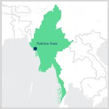

7 days ago
Rakhine is not a slave nation, but a master...
“ရခိုင်သည် ကျွန်လူမျိုးမဟုတ်၊ သခင်ဖြစ်သည်” ဟူသော ကြေငြာချက်သည် ရှုပ်ထွေးလှသော သမိုင်းဇာတ်ကြောင်းများနှင့် မြန်မာနိုင်ငံ ရခိုင်ပြည်နယ်ရှိ အထောက်အထားနှင့် အာဏာဝန်းကျင်ရှိ ခေတ်ပြိုင်နိုင်ငံရေး တင်းမာမှုများကို ထင်ဟပ်ဖော်ပြသည့် စကားရပ်ဖြစ်သည်။ . ၎င်းသည် တိုင်းရင်းသား-အမျိုးသားရေး စိတ်ဓာတ်များနှင့် လွတ်လပ်၍ အင်အားကြီးမားသော ရခိုင်နိုင်ငံတော်အဖြစ် အတိတ်သမိုင်းဆိုင်ရာ တောင်းဆိုမှုများနှင့် ဆက်စပ်နေသည်။ ထုတ်ပြန်ချက်၏ သမိုင်းဆိုင်ရာ အကြောင်းအရာ ထိုစကားစု၏ နောက်ကွယ်တွင် ခံစားချက်သည် ရခိုင်ပြည်ဟု ရာစုနှစ်ပေါင်းများစွာ လူသိများသော ဒေသသည် သြဇာကြီးပြီး လွတ်လပ်သော တိုင်းနိုင်ငံများ၏ နေရာဖြစ်ရာ သမိုင်းဆိုင်ရာ အကြောင်းအရာတစ်ခုမှ ဖြစ်ပေါ်လာခြင်းဖြစ်သည်။ ၁၅ ရာစုနှင့် ၁၇ ရာစုကြားတွင် ထွန်းကားခဲ့သော မြောက်ဦးနိုင်ငံတော်သည် ဘင်္ဂလားတောင်ပိုင်းသို့ ဩဇာချဲ့ထွင်ခဲ့သော ဗုဒ္ဓဘာသာ-အစ္စလာမ်မစ် တရားရုံးတစ်ခုနှင့်အတူ သိသာထင်ရှားသော ရေပိုင်နက်ဆိုင်ရာ ပါဝါတစ်ခုဖြစ်သည်။ ရခိုင်ရေတပ်သည် ဘင်္ဂလား ကမ်းရိုးတန်းတလျှောက် စီးနင်းမှုများ ပြုလုပ်ခဲ့ပြီး ကျွန်အဖြစ် ပြန်လည်ခေါ်ဆောင်လာသူများကို ဖမ်းဆီးခဲ့ပြီး အချို့မှာ ဒေသတွင်း လုပ်ငန်းများတွင် အသုံးပြုခဲ့ကြသည်ဟု သမိုင်းမှတ်တမ်းများက ဖော်ပြသည်။ ကြေညာချက်ပါ “မာစတာ” အထောက်အထားသည် ဤသမိုင်းဝင် လွှမ်းမိုးမှုနှင့် ကိုယ်ပိုင်အုပ်ချုပ်မှုခေတ်ကို ရည်ညွှန်းသည်။ ရခိုင်သမိုင်းများသည် ဗမာ (မြန်မာပြည်မကြီး) ထိန်းချုပ်မှုမှ ခွဲထွက်၍ တန်ခိုးကြီးသော လက္ခဏာတစ်ရပ်ကို ထူထောင်ရန် ကြိုးပမ်းရာတွင် “စင်ကြယ်သော” ရှေးအဆက်အနွယ်ကို အလေးပေးလေ့ရှိသည်၊၊
Contemporary Relevance In the present day, this historical memory informs the identity and political aspirations of the Rakhine people (also called Arakanese). The Arakan Army (AA), an ethnic armed organization, has gained significant control over territory in Rakhine State and seeks greater autonomy or even independence, seeing itself as the spearhead of a national movement. The statement is often used in contrast to the situation of the Rohingya Muslim minority, whose historical roots in the region are highly contested by the Rakhine majority and the Myanmar government. The marginalization and persecution faced by the Rohingya are often linked to the complex, competing narratives of indigeneity and historical ownership of the land. The phrase can be interpreted as a rejection of perceived subservience to the central Burmese government and an assertion of the Rakhine people's inherent sovereignty and historical power.
News